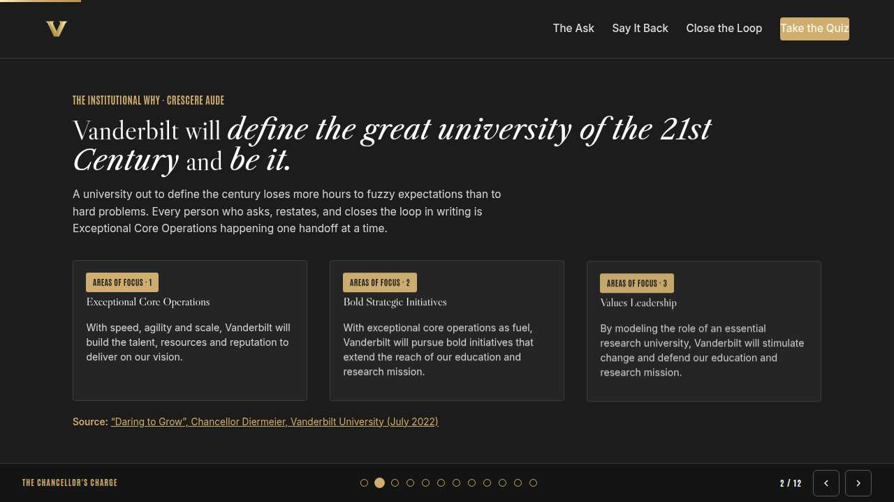
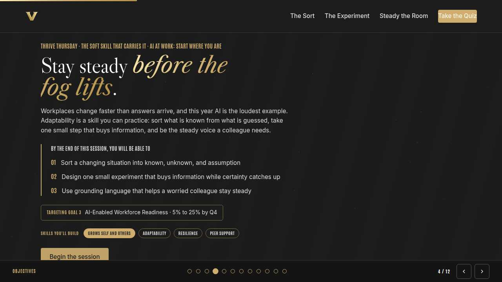
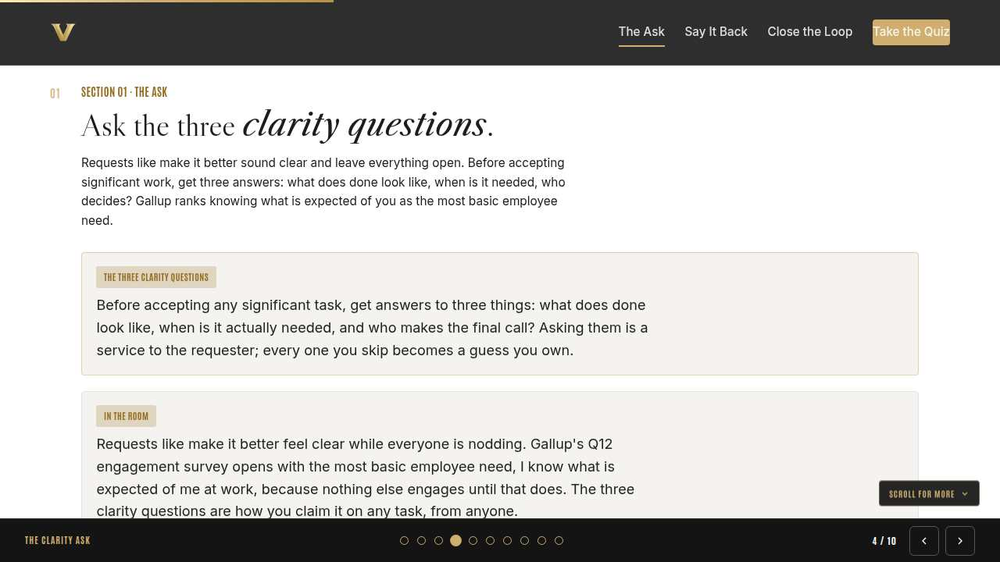
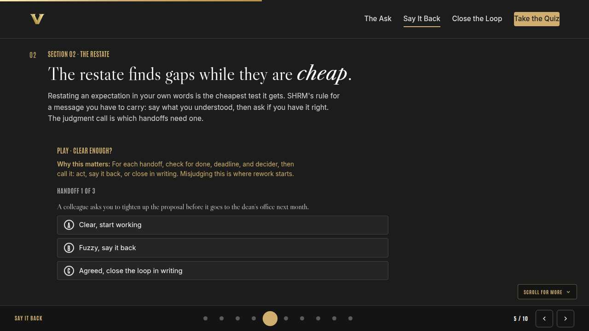
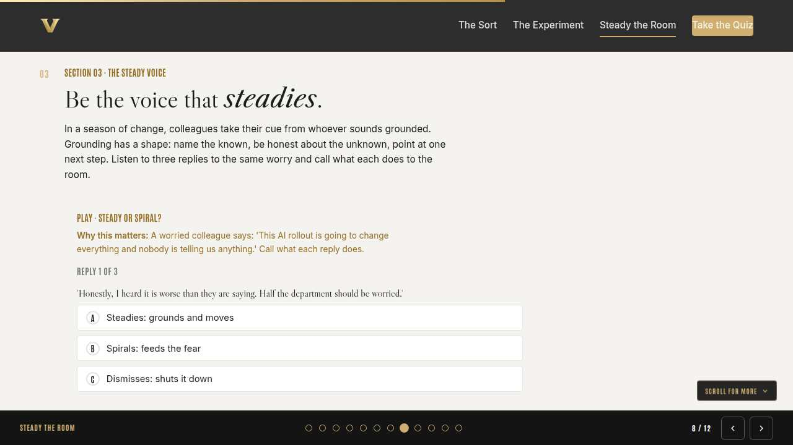
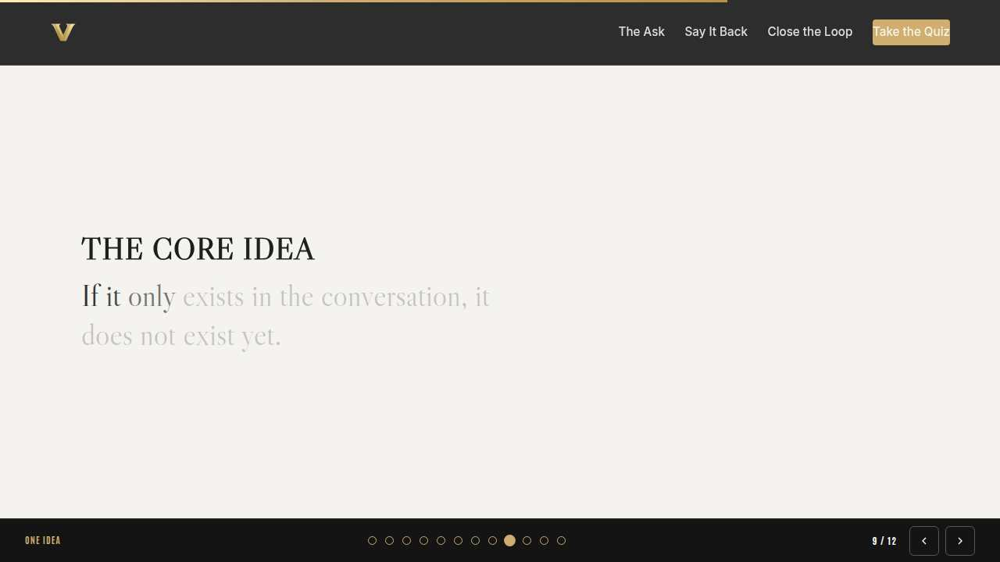
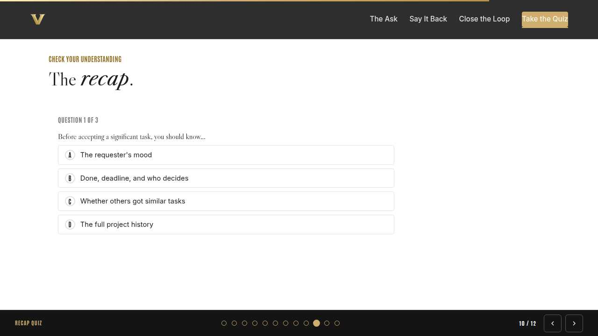
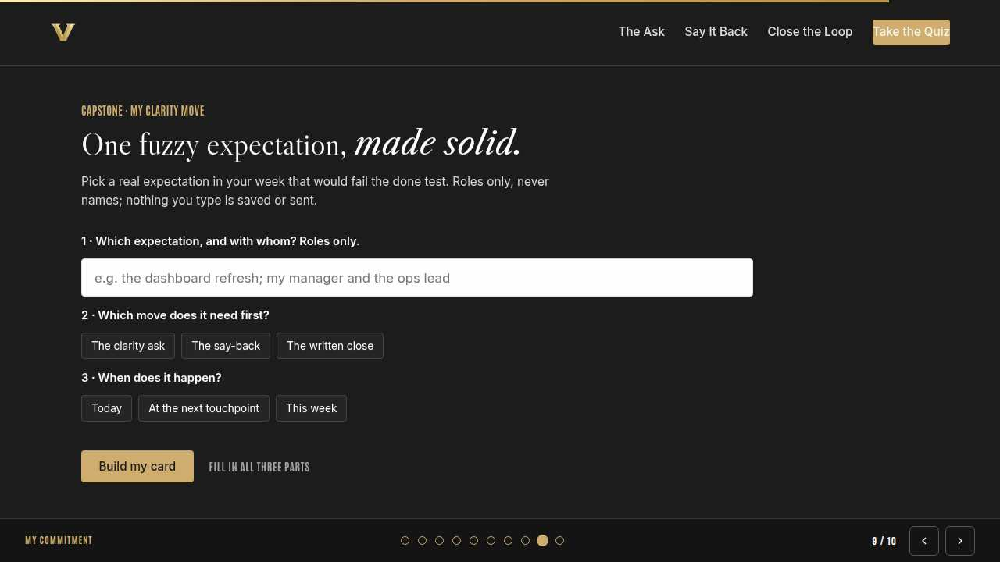
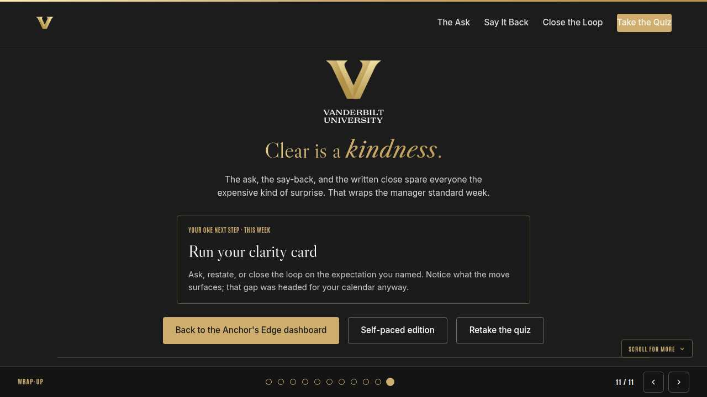

Vanderbilt · Anchor's Edge · ATD facilitator guide · print edition
Clarity That Sticks, the facilitator guide

Run of show
| Screen | Full (min) | Core (min) |
|---|---|---|
| Welcome / QR | 2 | 1 |
| Why we're here | 2 | 1 |
| Objectives | 1 | 1 |
| Agenda | 1 | skip |
| The clarity ask | 9 | 6 |
| Say it back | 11 | 8 |
| Close the loop | 9 | 6 |
| The core idea | 1 | skip |
| Recap quiz | 4 | 3 |
| Capstone commitment | 4 | 3 |
| Closing | 1 | 1 |
| Total | 45 | 30 |
The goal this month serves
Goal 2, Manager Effectiveness at Scale.
Audience
All Vanderbilt staff in the Anchor's Edge weekly rhythm; nobody is assumed to manage anyone. Works for 6 to 40 on a call; breakouts run in pairs. No prerequisites; pairs naturally with this week's Monday and Tuesday sessions.
Room setup
Virtual, instructor led: camera on, deck link in chat, breakouts of 2 available. Learners follow on their own screens via the welcome-slide link or QR. Nothing typed into the deck is saved or sent.
Materials
- Meeting platform with screen share and breakout rooms; deck link ready to paste in chat
- Facilitator machine with the facilitator edition open; notifications off
- Learners on their own devices with the learner link
- Chat open for share-outs; the capstone copy button pastes there cleanly
A week before
- Run the learner edition start to finish and do every interaction honestly; you will demo at least one live.
- Read this month's theme page on the Anchor's Edge dashboard so the goal tie-in is fluent.
- Send the invite with the learner link and one line on what to bring.
The day before
- Test screen share with the facilitator edition; confirm the notes rail is readable.
- Open the learner link on a second device; the QR must land there.
- Run the section interactions once so you can drive them without reading.
30 minutes before
- Welcome slide up as people join; link pasted in chat.
- Close every other tab; silence the machine.
- Breakout rooms pre-configured in pairs.
When things go sideways
If Screen share or the site fails mid-session: Paste the learner link in chat and narrate from your own browser; every interaction runs on learner devices without the share.
If Breakout rooms are unavailable: Run the breakout prompts as 60-second chat storms: everyone types their answer at once, you read the best three aloud.
If Someone names a real colleague while describing a fuzzy expectation: Protect them warmly and immediately: 'Hold that. Roles, never names.' The moves work on any expectation; the room never needs to know whose.
If A learner says the written close feels passive-aggressive in their team culture: Offer the friendly framing live: 'So I don't drop anything, here is what I have.' A close that reads as self-management lands well everywhere; tone is choosable.
Tough questions, ready answers
Q: Won't constant clarity questions annoy busy senior people?
Three targeted questions asked once beat a week of guessing followed by rework they have to review. Busy people benefit most from your clarity. The annoying version is vague questions asked repeatedly, which is exactly what the three-question form prevents.
Q: What if I restate and the other person gets impatient?
Keep it to one sentence and frame it as a service: quick check so I build the right thing. If a ten-second restate still lands badly, that tells you something about the expectation's real clarity, and you just learned it early.
Q: Isn't putting things in writing a trust problem?
The close is written to help both people, and it reads that way when it is short, same-day, and framed as keeping yourself organized. Manager Monday taught the other chair to set expectations visibly; your written close is the matching half of the same standard.
Copy-paste templates
Pre-work invite (paste into the calendar invite)
Subject: Thursday, 45 minutes on clarity that sticks. Bring one current task or handoff that feels fuzzier than anyone has admitted. You will never be asked to name people. Live and interactive; have the session link open on your own screen.
7-day pulse (send one week after)
Subject: Did the clarity move happen? Three lines, reply whenever: 1) Did you run the move on your clarity card? 2) What gap did it surface? 3) Which of the three moves is closest to becoming a reflex?
After the session
Seven days out, send the pulse: 'Did you run the move on your clarity card? What gap did it surface? Which of the three moves is becoming a reflex?' Count of completed clarity moves is the month's practice signal.
Welcome / QR Full 2 min · Core 1
Get everyone into the deck on their own screen and set the tone: 45 minutes, live, hands on.
Say
“Welcome to Thrive Thursday. Scan the code or click the link in chat so this session runs on your screen too. Forty-five minutes, one focus: Clarity as a two-way skill: ask, restate, and close the loop in writing.”
Do
- Slide up as people join; link pasted in chat every few minutes.
- State the norm once: type into your own screen, nothing you enter is saved or sent.
Watch for: People lurking without the deck open. The interactions only land if the deck is on their screen.
Transition: “Before the topic, thirty seconds on why Vanderbilt is asking for this hour.”

Why we're here Full 2 min · Core 1
Anchor the session in the Chancellor's charge and name the goal this month serves, inside one minute.
Say
“One sentence from the Chancellor sits over everything we do: Vanderbilt will define the great university of the 21st Century and be it. A university out to define the century loses more hours to fuzzy expectations than to hard problems, and every clean handoff is Exceptional Core Operations in miniature. This month serves Goal 2, Manager Effectiveness at Scale.”
Do
- Read the mission line slowly, once; name the goal, once.
- No discussion here; the whole slide is under a minute.
Transition: “Here is what you will be able to do in 45 minutes.”

Objectives Full 1 min · Core 1
Set the contract for the session in under a minute.
Say
“By the end of this session: ask the three clarity questions before accepting any significant task; restate an expectation in your own words and surface the gaps early; close the loop in writing the same day so the agreement survives. That is the whole contract.”
Do
- Read the three objectives briskly; do not elaborate yet.
Transition: “Three stops to get there.”

Agenda Full 1 min · Core skip
Show the path so the room can pace itself.
Say
“Three stops: the clarity ask, say it back, close the loop. Each one has something to play with, so keep the deck open.”
Do
- Point once at each stop; ten seconds each.
Transition: “Stop one.”
Core path: Core: skip the read-through, gesture at the slide in passing.

The clarity ask Full 9 min · Core 6
Install the three clarity questions as a reflex before accepting significant work.
Say
“Think of the last task that went sideways on you. Odds are it was never clear to begin with: make it better, own this going forward. Those requests feel clear for about an hour. Gallup has measured engagement with the same twelve questions for decades, and the first one is simply, I know what is expected of me at work. Everything downstream depends on it. Three questions get you there, and anyone can ask them of anyone: what does done look like, when is it actually needed, and who makes the call?”
Do
- Read the concept card once; let it sit.
- Walk the In the room context; name the three answers slowly. No quiz in the live room.
- Open the discussion prompt on the sideways task; take two or three voices.
- Run the breakout on the task with no picture of done.
Ask
“What makes people swallow the clarity questions instead of asking them?”
Expect:
- Fear of looking slow
- Assuming it will become clear later
- Power distance with the requester
Respond: All real. Here is the reframe: the requester usually has a fuzzy picture too, and your question does them a favor. Later never clarifies anything on its own.
Debrief: Done, deadline, decider. Three answers turn a request into an expectation; skipped, they turn into guesses you own.
Watch for: People treating this as manager-only material. Keep the framing two-way: peers hand each other fuzzy work constantly.
Transition: “Asking is half the skill. The other half is proving you heard it right.”
Core path: Core: skip the breakout; ask for one fuzzy task in chat instead.

Say it back Full 11 min · Core 8
Train the restate: judging when an expectation is clear enough to act on and testing it in your own words.
Say
“The restate is the cheapest quality check in working life. You say the expectation back in your own words and end with: am I missing anything? Ninety percent of the time you get a nod and free confidence. The other ten percent you find a gap while it still costs minutes instead of weeks. Let's train the judgment call.”
Do
- Run Clear enough? live; everyone plays on their own screen.
- Pause after the hallway-agreement round; that one splits the room usefully.
- Run the breakout on the handoff nobody has said back.
Ask
“Why can restating a fully clear request backfire?”
Expect:
- Reads as stalling
- Signals you were not listening
- Slows a fast moment
Respond: Right, so the skill includes knowing when to just start. Restate when done, deadline, or decider is missing; act when all three are on the table.
Debrief: When done, the deadline, or the decider is missing, say it back in your own words. When all three are on the table, just start.
Watch for: Word-for-word parroting in the examples. Push for own words: parroting proves listening, restating proves understanding.
Transition: “One move left: making the agreement survive the week.”
Core path: Core: run the trainer, skip the breakout, take one voice on the debrief question.

Close the loop Full 9 min · Core 6
Make the same-day written close a habit: what I heard, what I own, by when.
Say
“Every agreement has a half-life. The conversation was perfect, everyone nodded, and two weeks later there are two honest, different memories of it. The written close stops the decay: three lines, same day. What I heard, what I own, by when. Ninety seconds of typing that replaces hours of rework, so let's build the one you would actually send.”
Do
- Run Write the close; give the room two minutes for both choices.
- Ask one volunteer to read their two-weeks-later outcome aloud.
- Point at the pattern: own words in the room, written words the same day.
Ask
“Why same day, specifically?”
Expect:
- Memory decays fast
- Next week you write what you remember
- It keeps the correction cheap
Respond: Exactly. The close documents the conversation while both memories still match. A week later you are writing fiction in good faith.
Debrief: Three lines, same day: what I heard, what I own, by when. Short enough to always send, specific enough to settle arguments.
Watch for: People drafting long formal recaps. Keep it to three lines; the habit survives only while it stays cheap.
Transition: “Quick recap, then you pick your real expectation.”
Core path: Core: everyone runs the builder solo; skip the read-aloud.

The core idea Full 1 min · Core skip
Land the one sentence the session exists to install.
Say
“If you keep one sentence from today, this is it. Read it once, out loud: If it only exists in the conversation, it does not exist yet.”
Do
- Pause two beats after reading; the word animation carries it.
Transition: “The recap makes it stick.”
Core path: Core: pass through in stride; the sentence reads itself.

Recap quiz Full 4 min · Core 3
Score the learning while it is fresh; wrong answers are teaching moments, not failures.
Say
“Three questions, on your own screen. Answer honestly; the explanations are where the learning sticks.”
Do
- Give the room 90 seconds to run it individually.
- Ask for a show of results in chat: how many got 3 of 3?
- Read out the explanation for whichever question drew the most misses.
Watch for: Rushing past the why lines. The explanations carry the teaching.
Transition: “Now point it at your real week.”

Capstone commitment Full 4 min · Core 3
Convert the session into one named, dated action per person.
Say
“Now aim it at something real. One expectation in your week that would fail the done test. Name it, roles only, pick your move and your window, and build the card. Copy it somewhere you will see it tomorrow. Two minutes, quiet, go.”
Do
- Two quiet minutes; everyone builds their own card.
- Invite two or three volunteers to read their card aloud or paste it in chat.
- Remind: copy the card somewhere you will see it this week.
Watch for: Vague entries. Nudge for a name-able situation and a real date.
Transition: “Last slide.”

Closing Full 1 min · Core 1
End with the next step and where this thread continues.
Say
“That closes the manager standard week. Monday named the behaviors, Tuesday put the Oracle tools in your hands, and today you got the clarity moves that make expectations stick from either chair. If you want to keep pulling the thread this month, the LinkedIn Learning course New Manager Foundations with Todd Dewett is open to everyone, and the navigators are running a walk-through clinic on the standard itself. Next week the rhythm continues, and January opens the next theme, AI at Work: Start Where You Are. Go run your clarity card first.”
Do
- Point at the next-step card; one sentence.
- Name the rest of the week's rhythm: the other sessions echo this month's theme.
Generated from facilitator/notes.json. The on-screen facilitator edition lives at ./ alongside this guide.